KILLTUBEに関わる皆様へ！
いつも様々な角度から助けてくださり、ありがとうございます！
作品の概要や、プロジェクトスケジュール、宣伝プランや情報などがこのページにまとまっています。
読み物として、情報共有ツールとしてぜひご活用ください。
作品について
About the Movie
KILLTUBEの構想は、2021年にスタートしました。
映画としてこの作品を作ろうと目標を掲げ、パイロットフィルムを公開したのが2024年4月のこと。
ありがたいことに大きな反響があり、無事に映画としての製作を進められることになりました。
あらすじ
西暦2027年。
江戸幕府による鎖国が続く日本。
海を閉ざす壁の中には、巨大な高層都市がひしめきあっていた──。
キャラクター紹介
STAFF スタッフ紹介
監督： 栗林和明
キャラクターデザイン： ◯◯ ◯◯
音楽： ◯◯ ◯◯
BEHIND メイキング
SCHEDULE スケジュール
企画・開発フェーズ
世界観構築、パイロットフィルム制作
本制作開始
宣伝について
Promotion Strategy
MISSION宣伝作戦ボード
宣伝大方針
共創人口最大化
KILLTUBEの興行目標はとても高いもので、宣伝として到達すべきKPIとして「認知度25%」というものを大きく掲げています。
より多くの方をこの作品の「関係者」として巻き込ませていただき、共創関係になれるか・・？という考えのもと、現在宣伝の施策を仕込み中です。
認知目標 (公開1週前)
25%
鑑賞意欲目標
2%
数値ゴール
3日間動員 25万人 / 3.5億
TARGET PROFILE
クリエイティブ層
エンタメワーカーを火付け役に。
コア層の熱狂をフックに超マス化へ波及させるバズ施策を展開。
完全オリジナル原作＆初監督作品であるが故に、既存ファンがいない。
知名度ゼロスタート。
完全オリジナル作品で我々が多くの判断を主導できるが故に、共創関係をつくりやすい。
あらゆる実験がしやすい。
全体
スケジュール
2映像アーカイブ
3公式SNSの展開
公式SNSではこれまで作品の設定やキャラクター情報など, 土台を整える投稿を続けてきました。
27年にはいよいよ本格的な運用を始めますが、ここまでの投稿をアーカイブ的に紹介します。
26年の大きな実験/チャレンジ施策として、「映画の公開前にキャラクターへの愛着を醸成する」を進めています。
基本情報・世界観設定
作品の根幹となる歴史、舞台の裏設定、世界観を構築するための解説投稿です。
2026年5月20日
NEO-KYOTOに聳え立つ、厳重な管理社会を支える「巨大高層都市」の全貌。
2026年4月14日
最底辺から勝ち上がる唯一の決闘配信プラットフォーム「KILLTUBE」。
2026年3月5日
犬に育てられた少年・ムサシ。型破りなスタイルで江戸の頂点へ。
武器・乗り物
映画の中に登場する乗り物や武器、ステッカーのデザイン等を一般の方から募集しました。中学生〜社会人まで本当に多くの方に応募していただき、本編にも登場するものがあります。
キャラクター育成企画
過去イラスト, 漫画など
過去のアートワークや公式連載マンガなど、キャラクターを身近に感じてもらうための愛着醸成コンテンツです。
映画本編タイアップ
進捗レポート
映画本編に登場する企業コラボのビジュアルが続々到着！「和風×ストリート」の世界観に各企業のブランドがどう馴染むのか, 実際のデザインをご確認ください。
装備デザイン開発
NIKE
SUNTORY
TOYOTA
街中看板プレイスメント (Duolingoコラボ)


そのほか、プレイスメントに関わらないタイアップについて
今後本格的に仕込んでいきたいと思っています！
ぜひお気軽にお問い合わせいただけると嬉しいです。
海外展開
2025
Anime Expo 出店
2026
アヌシー国際アニメーション映画祭 出品
2027
カンヌ、ベルリン、アヌシーを狙いつつ、
北米でのAnime Expo注力予定
過去の記事一覧
2026.06.01
過去の記事タイトルがここに入ります。
2026.05.15
過去の記事タイトルがここに入ります。
2026.04.20